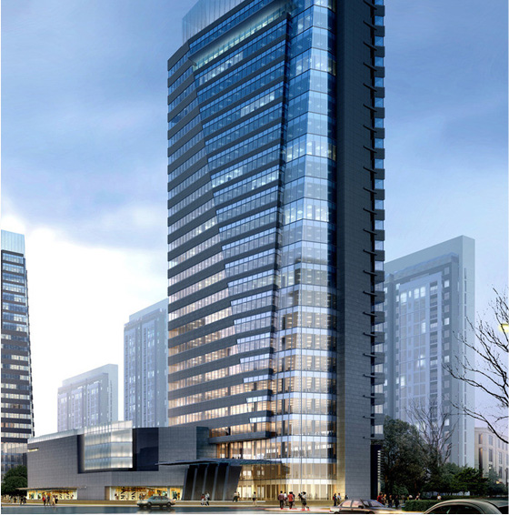

新增单位介绍

南昌县城市建设投资发展有限公司
南昌县城市建设投资发展有限公司成立于2005年，注册资金为二亿一千万元人民币，是由县政府出资设立的国有独资公司。
公司实行“政府领导、市场化运作、公司化管理”的运营模式。主要履行城市建设资金融资和使用管理职能。在政府授权下，
对城市建设项目中基础设施、市政工程等非营利及准非营利性项目履行业主职能。同时在县委、县政府的扶持下，
大力拓展自营项目，壮大公司实力，实现公司的资本运作。
公司先后组建了南昌县城市管网建设投资有限公司、南昌绿城物业管理有限公司、
南昌银城房地产开发有限公司、南昌县城市公用设施建设投资有限公司、
南昌县国有资产管理有限公司和南昌县还贷周转金服务中心等子公司。参股江西省天燃气昌南有限公司。
县城建局下属洪宇建设集团也于2008年成建制划归我司。公司内设“七部二室”即：人力资源部、计划财务部、
经营管理部、监察审计部、项目前期部、房建工程管理部、市政工程管理部、综合办公室、总工程师办公室。
公司自成立以来，始终坚持“用好城市资产资源，创建城市美好生活”核心使命，较好地完成了县委、
县政府下达的重点工程的建设和融资任务，已经成为南昌县城市建设的主力军和城市建设融资的主载体，
顺利地完成了企业的阶段性使命。在“十三五”期间，面对城市发展的新目标、新要求，
南昌县城投公司不仅要做好加法，更要做好乘法，重点做好“四个主体”，
即城市建设的融资主体、城市发展的建设主体、城市资产的运营主体和新兴产业的投资主体，
为城市发展提供投融资、建设、运营等全方位的服务。突出做好资产经营这篇文章。在政府指导下，
公司充分运用市场化的手段经营城市资产，实现城市资源配置的最优化和效益最大化，最终实现项目建设和资产经营双轮驱动，
力争在“十三五”期末成为专业化、多元化、规范化的综合性城市发展服务商和运营商。